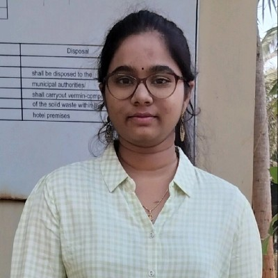

<!DOCTYPE html>
<html lang="en">
<head>
  <meta charset="UTF-8">
  <meta name="viewport" content="width=device-width, initial-scale=1.0">
  <title>Resume</title>
</head>
<body>
  <h1><u>PENMATSA SATHWIKA</u></h1>
  <hr />
   
  <h2><u>Summary</u></h2>
  <p>A driven third-year B.Tech student passionate about Computer Science, I'm dedicated to apply classroom knowledge to real-world challenges, constantly learning and mastering new technologies. With solid problemsolving skills and a collaborative mindset, I thrive in team environments. Excited to explore internship opportunities and contribute to the advancement of Computer Science.</p>
  <h2><u>Education</u></h2>
  <h3>Gitam School Of Technology</h3>
  <p>
    Bachelor of technology in computer science<br />
    (2022-2026)<br />
    CGPA till 4rd semester:8.66<br />
  </p>
  <h3>Fiitjee Junior College</h3>
  <p>
    Intermediate(2020-2022)<br />
    (2020-2022)<br />
    percentage: 92%<br />
  </p>
  <h3>DE-Paul School</h3>
    Schooling(3rd-10th grade)<br />
    Percentage:94%<br />
  </p>
  <h2><u>Soft Skills</u></h2>
  <ul>
    <li>Communication</li>
    <li>Teamwork</li>
    <li>ProblemSolving</li>
    <li>Time Management</li>
  </ul>
  <h2><u>Technical Skills</u></h2>
  <ul>
    <li>C</li>
    <li>C++</li>
    <li>Python</li>
    <li>Java</li>
    <li>Html</li>
    <li>CSS</li>
    <li>Microsoft office</li>
  </ul>
  <h2><u>Languages Known</u></h2>
  <ul>
    <li>Telugu</li>
    <li>Hindi</li>
    <li>English</li>
  </ul>
  <h2><u>Projects</u></h2>
  <ul>
    <li>Created a simple calculator app using python</li>
    <li>Created a portfolio page using HTML and CSS</li>
    <li>Working on building a LLM which works without using internet</li>
  </ul>
  <h2><u>Achivements</u></h2>
  <ul>
    <li>I have been conferred with an A-level certificate in the National Cadet Corps (NCC).</li>
    <li>I attained third place in a distinguished science exhibition.</li>
    <li>I was honoured with three gold medals for proficiency in Vedic Mathematics.</li>
  </ul>
  <h2><u>Hobbies</u></h2>
  <ul>
    <li>Reading Novels</li>
    <li>Painting</li>
    <li>Competitve Programming</li>
    <li>Interactive digital entertainment experiences</li>
  </ul>
  <h2><u>EXTRA CURRICULAR ACTIVITIES</u></h2>
  <ul>
    <li>National Cadet Corps (NCC) - A-Level Certificate.</li>
    <li>As an active participant in the National Cadet Corps (NCC), I have dedicated myself to pursuing excellence in leadership, discipline, and civic responsibility. Through my commitment and dedication, I have achieved the prestigious A-Level Certificate, signifying my proficiency and adherence to the core values upheld by the NCC.</li>
    <li>I actively participate in the Women's Leadership Forum, organising and overseeing numerous events to foster
      women's empowerment and advancement.</li>
    <li>I volunteered for the prestigious Shore Fest, the most significant event organized by GITAM University,
      contributing to its successful execution and management.</li>
    <li>I am an active member of the Pragna Club, the esteemed coding club at GITAM University. I am privileged to
      be among the top 200 students selected to participate in the club's activities.</li>
  </ul>
  <h2><u>Declaration</u></h2>
  <p>I hereby declare that the information furnished above is correct to the best of my
    knowledge.</p>
  <a href="./Contact.html"><h4>Contact</h4></h4></a> 
  <a href="https://www.linkedin.com/in/sathwika-penmatsa/"><h4>Linkedin Profile</h4></a>
</body>
</html>